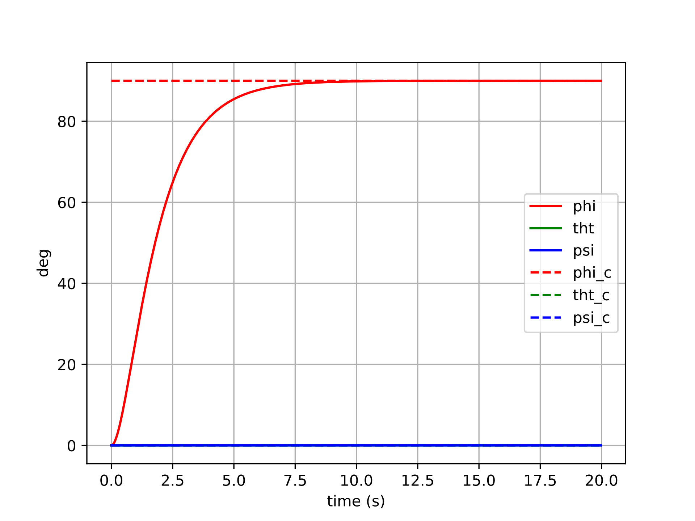
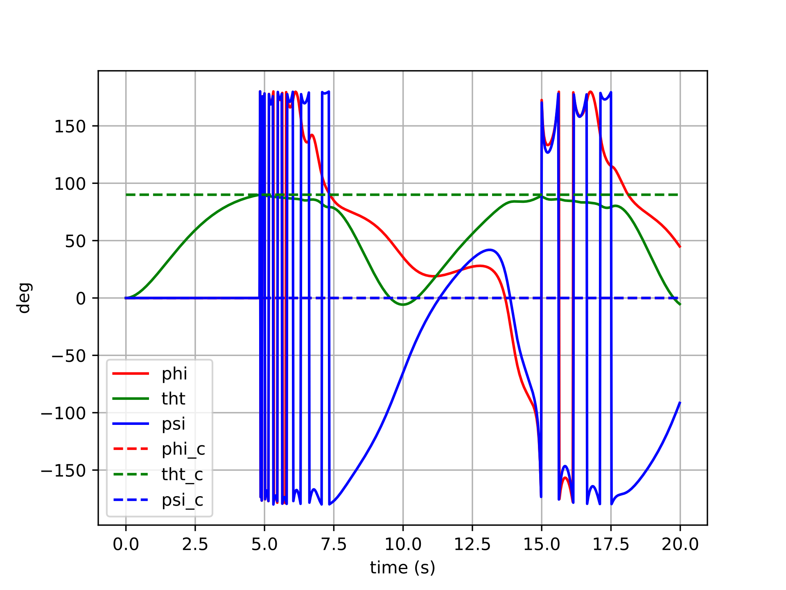
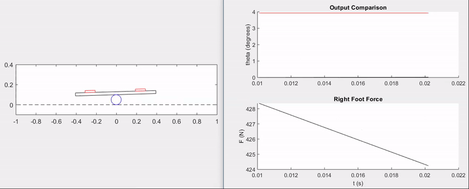
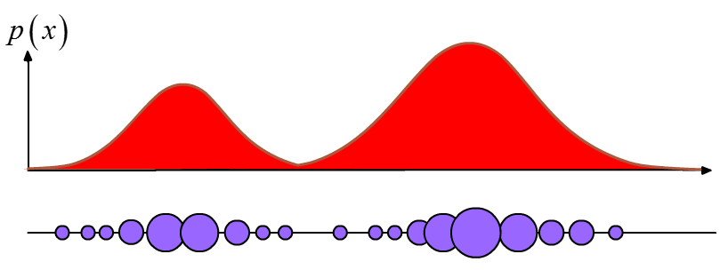
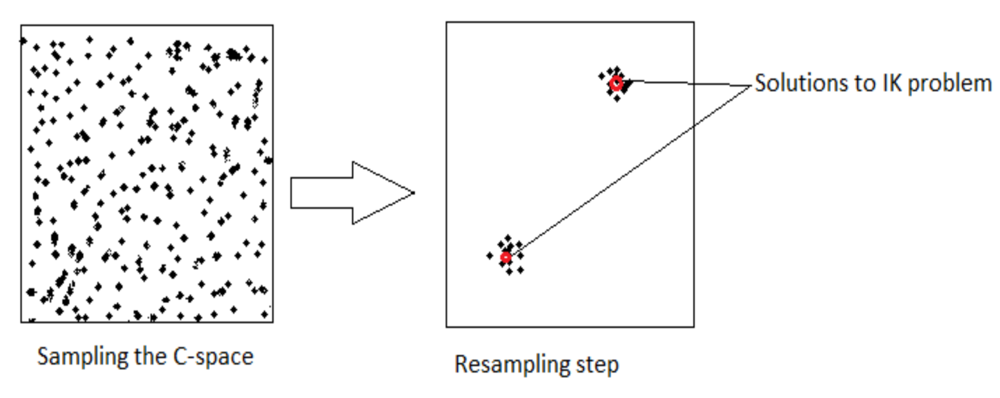

Andrew’s Projects
Assorted (mostly) autonomy-related projects that I’ve worked on either during my free time or from when I was in school. A lot more software projects can be found on my software page.
Control and Planning
- Apollo Spacecraft Control
- Board Balancing
- Genetic Algorithm-Based UAV Path Planner
- Inverted Pendulum Dynamic Programming
- Minimum-Snap Trajectories with Error-state-LQR Control
- Multi-Agent Air Hockey
- Optimal Control on SO(2) Tutorial
- Proportional Navigation on a UAV
Apollo Spacecraft Control
An investigation into different forms of attitude control.
All source code used can be found here.

Motivation
A few years after taking an advanced dynamics course during undergrad, I decided to re-visit the Euler-based dynamics and controls implementations that I had done for that class’s final project. After having gained additional experience creating controllers for inner attitude loops on drones, I primarily wanted to show how much more “concise” the controller for this project could be. However, the second and more important purpose for re-visiting this controller was to clearly illustrate the pitfalls of Euler-based attitude control which I’ve found to be so commonplace in UAV autopilots. Unlike a quadrotor, which may spend most of its flight time close to a hover attitude-wise, a spacecraft will have to exercise control at just about any arbitrary attitude.
Spacecraft Model
The spacecraft modeled here is the Apollo Command/Service Module, represented as a rigid body rotating freely in three dimensions. Its attitude is parameterized by a unit quaternion \(\boldsymbol{q} \in SO(3)\), and its angular velocity \(\boldsymbol{\omega} \in \mathbb{R}^3\) is expressed in the body frame. The rotational equations of motion are Euler’s equations:
$$\boldsymbol{J}\dot{\boldsymbol{\omega}} = -\boldsymbol{\omega} \times \boldsymbol{J}\boldsymbol{\omega} + \boldsymbol{u}$$
where \(\boldsymbol{J}\) is the spacecraft’s inertia tensor and \(\boldsymbol{u}\) is the applied torque. The kinematic equation relating quaternion rate to body angular velocity is:
$$\dot{\boldsymbol{q}} = \boldsymbol{\omega}$$
(using the \(SO(3)\) convention where the quaternion is updated via the exponential map of the angular velocity in the tangent space).
The inertia parameters for the Apollo CSM were sourced from reference data and are used in two forms throughout the simulation:
- Full inertia tensor \(\boldsymbol{J}\) (with off-diagonal cross terms):
$$\boldsymbol{J} = \begin{bmatrix} 40823.16 & -1537.81 & 3179.30 \\ -1537.81 & 90593.60 & -128.58 \\ 3179.30 & -128.58 & 98742.98 \end{bmatrix} \text{ kg·m}^2$$
- Simplified diagonal inertia \(\boldsymbol{J}_\text{simp}\) (cross terms dropped):
$$\boldsymbol{J}_\text{simp} = \text{diag}(40482.07,\ 90358.43,\ 98637.07) \text{ kg·m}^2$$
The full tensor is used when evaluating controller robustness, while the simplified tensor is used when the controller itself is designed (i.e., model uncertainty is intentionally introduced between the plant and the controller model).
The state is integrated numerically using a fourth-order Runge-Kutta scheme at 50 Hz over a 20-second window.
Controlling the Spacecraft
Controller Types
All controllers share the same proportional-derivative structure, commanding a torque that penalizes attitude error and angular rate error:
$$\boldsymbol{u} = -k_q \boldsymbol{e}_q - k_w \boldsymbol{e}_\omega + \boldsymbol{u}_\text{ff}$$
where \( \boldsymbol{e}_q \) is the attitude error, \( \boldsymbol{e}_\omega = \boldsymbol{\omega} - \boldsymbol{R}^\top \boldsymbol{R}_d \boldsymbol{\omega}_d \) is the angular rate error expressed in the body frame, and \(\boldsymbol{u}_\text{ff}\) is an optional feedback linearization feedforward term.
The controllers differ along three independent axes:
1. Attitude error formulation — This is the central comparison of this investigation:
-
Euler error: The error is computed by subtracting component-wise Euler angles: \(\boldsymbol{e}_q = [\phi - \phi_d,\ \theta - \theta_d,\ \psi - \psi_d]^\top\). This is intuitive but relies on a coordinate chart that breaks down near singularities (gimbal lock occurs at \(\theta = \pm 90°\)) and produces geometrically incorrect error vectors at large attitude deviations.
-
Tangent space (manifold) error: The error is computed as the logarithmic map of the relative rotation between the current and desired attitudes on \(SO(3)\): \(\boldsymbol{e}_q = \boldsymbol{q} \ominus \boldsymbol{q}_d = \text{Log}(\boldsymbol{q}_d^{-1} \otimes \boldsymbol{q})\). This always produces a geometrically meaningful, singularity-free error vector in \(\mathbb{R}^3\).
2. Feedback linearization — When enabled, additional terms are added to cancel the nonlinear gyroscopic coupling \(\boldsymbol{\omega} \times \boldsymbol{J}\boldsymbol{\omega}\) from the dynamics and to account for non-zero desired angular rate and acceleration, yielding a more linear closed-loop response:
$$\boldsymbol{u}_\text{ff} = \boldsymbol{\omega} \times \boldsymbol{J}\boldsymbol{\omega} - \boldsymbol{J}\left(\hat{\boldsymbol{\omega}}, \boldsymbol{R}^\top \boldsymbol{R}_d \boldsymbol{\omega}_d\right) + \boldsymbol{J}, \boldsymbol{R}^\top \boldsymbol{R}_d \dot{\boldsymbol{\omega}}_d$$
3. Inertia model — The controller can be designed using either the full inertia tensor or the simplified diagonal one. Using the simplified model while simulating against the full tensor tests controller robustness to model mismatch.
The results below focus on the nonlinear (feedback-linearized) controller with the simplified inertia model, commanded to track a step attitude input with full feedforward (desired rate and acceleration included). This setting exercises the controller aggressively and makes the differences between error formulations most apparent.
Results
Controller with Euler Error
Error formulation:
$$\boldsymbol{u}=-k_q\left(\begin{bmatrix}\phi-\phi_d && \theta-\theta_d && \psi-\psi_d\end{bmatrix}^{\top}\right)+\dots$$
The plots below show six different step-command tracking trials for the Euler-error controller. Each trial commands a different target attitude (a step from the identity), varying in the size and axis of the rotation. The solid lines show the actual Euler angles of the spacecraft, and the dashed lines show the commanded Euler angles.





For small commanded rotations (trials 1–2), the Euler-error controller performs reasonably well — the spacecraft converges to the target attitude, though with some cross-axis coupling visible as transient excursions in the non-commanded channels. This coupling arises because the Euler angle error vector is not aligned with the actual rotation axis in body space, so the control effort incorrectly distributes torque across axes.
For larger commanded rotations (trials 3–6), the behavior degrades more noticeably. The cross-axis coupling worsens, and in the most extreme cases the controller may exhibit oscillatory or sluggish transients as the Euler singularity region is approached. The error signal becomes geometrically misleading — commanding large torques along incorrect body axes — and the feedback linearization cannot fully compensate because the underlying error representation itself is wrong.
Controller with Tangent Space Error
Error formulation:
$$\boldsymbol{u}=-k_q(\boldsymbol{q}\ominus\boldsymbol{q}_d)+\dots$$
The same six step-command trials are repeated here with the manifold-error controller. All other settings (gains, feedback linearization, inertia model) are identical, so any difference in behavior is attributable entirely to the error formulation.


The manifold-error controller shows cleaner convergence across all six trials. Because the error \(\boldsymbol{q} \ominus \boldsymbol{q}_d\) is computed via the logarithmic map on \(SO(3)\), it always points along the true geodesic rotation axis — the shortest path from the current attitude to the desired one. This means the control torque is correctly directed in body space regardless of the magnitude or axis of the commanded rotation.
For small rotations, the two controllers produce similar results (consistent with the fact that Euler angles and the tangent space are locally equivalent near the identity). For larger rotations, the manifold controller maintains well-behaved, decoupled tracking: each axis converges independently with minimal excitation of the other channels. There are no singularities to encounter, and no degradation as the commanded attitude grows larger.
Conclusions
Euler-angle attitude controllers are pervasive in UAV autopilots — and for good reason. Near hover, a quadrotor rarely strays far from the identity attitude, so the Euler singularity is never approached and the coordinate-chart error works well enough. The cost of that simplicity is low.
For a spacecraft, however, arbitrary large-angle maneuvers are routine. In that regime, the Euler error formulation’s geometric incorrectness becomes a real liability: cross-axis coupling degrades tracking performance, and any trajectory that approaches the \(\theta = \pm 90°\) singularity can cause the controller to behave erratically or fail entirely.
The tangent space error formulation resolves both problems with remarkably little additional complexity. Computing \(\boldsymbol{q} \ominus \boldsymbol{q}_d\) via the \(SO(3)\) logarithmic map requires only a handful of extra lines of code, yet it yields an error signal that is geometrically valid everywhere on the rotation group — no singularities, no cross-axis distortion, and consistent convergence behavior regardless of the size of the commanded maneuver.
The practical takeaway: the choice of attitude error representation is not merely a mathematical nicety. It is a design decision with real consequences for controller performance, and the manifold-based approach should be the default for any system that exercises significant rotational authority.
Board Balancing Technical Project
A personal attempt to apply linear control theory to a real-world system.
Motivation
I carried out this project in a cabin during Thanksgiving break with my family. I was in the middle of my first official Controls course, and I guess my excitement for the subject prompted me to dedicate some time to mathematical derivations and programming instead of the mountains and the hot tub…
Model Description
Basically, the challenge is to have a person balance on top of a board, which in turn is balancing on top of a cylinder (like a two liter bottle or something). I made this physical setup with an old skateboard for fun and to improve my balance in dynamic situations.
Schematic:

Assumptions:
- There is no slip between the ground, the cylinder, and the board.
- The finite weight of the person balancing on the board can be shifted between the two feet with negligible rotational inertia effects from the shifting.
- Motion confined to the plane.
- All objects in the system act as rigid bodies.
Equations of Motion and Controller Derivation:
I used the Euler-Lagrange method to model the dynamics of the board balancing system, and decided to try using a state space feedback controller with an integrator to control the system to commanded cylinder rotation angles.
All of my work and the final dynamics/controller equations can be found in the notes I made over Thanksgiving break. I thought it would be fun to include my hand-written notes to demonstrate both my meandering efforts and the way I like to take notes on all kinds of subjects. There are a lot of colors and pasted images involved, as I prefer to gather information from all around the internet to fill in emergent gaps in my understanding as I go.
Matlab Implementation

To test out my derived dynamics and controller, I created a simulation in Matlab that models the dynamics of the board balance system and controls it to commanded cylinder angle values. The following sections give code listings for all of the blocks in the above block diagram.
Parameters
This code defines all physical parameters for the system, the linearized state space model, the controller parameters, and the signal and animation parameters.
% Physical Parameters
P.mp = 2; % mass of plank (kg)
P.mb = 3; % mass of bottle (kg)
P.g = 9.81; % gravity (m/s^2)
P.dL = 0.25; % distance from left foot to plank center (m)
P.dR = P.dL; % distance from right foot to plank center (m)
P.wp = 0.8; % width of plank (m)
P.hp = 0.03;% thickness of board (m)
P.Rb = 0.05; % radius of bottle (m)
P.Ft = 800; % my weight (N)
P.Jb = 1/2*P.mb*P.Rb^2;
P.Jp = 1/12*P.mp*(P.wp^2 + P.hp^2);
% Linearized State-Space Model
P.A = [0 1 0 0;P.Ft*P.Rb/P.Jp 0 P.Ft*P.Rb/P.Jp 0;...
0 0 0 1;(P.Ft+P.g*P.mp)*P.Rb/P.Jb 0 0 0];
P.B = [0; -(P.dL+P.dR)/P.Jp; 0; 0];
P.C = [0 0 1 0];
n = rank(P.A);
% Full state feedback gains
wnthetab = 40;
wnphi = 10*wnthetab;
zeta = 1/sqrt(2);
desiredPoly = conv([1 2*zeta*wnthetab wnthetab^2],[1 2*zeta*wnphi wnphi^2]);
Ahat = [P.A zeros(n, 1);-P.C 0];
Bhat = [P.B; 0];
K = place(Ahat, Bhat, [roots(desiredPoly); -5]);
P.K = K(1:n);
P.Ki = K(end);
% Saturation limits
buffer = P.Ft;%/2; % the maximum you can go
P.umax = P.Ft/2 + buffer;
P.umin = P.Ft/2 - buffer;
% Animation Parameters
P.footW = .1; % width of foot (m)
P.footH = .02; % height of shoe sole (m)
P.floorL = 2; % length of sim floor (m)
P.ceilH = 0.4; % height of sim ceiling (m)
% Simulation Parameters
P.phi0 = 0.0;
P.phidot0 = 0.0;
P.thetab0 = 0.0;
P.thetabdot0 = 0.0;
P.t0 = 0.0;
P.tf = 10.0;
P.Ts = 0.0001;
P.t_plot = 100*P.Ts; %0.0001;
P.r_amp = 20*pi/180;
P.r_freq = 1;
Signal Generator
This code defines functions for generating a signal for the commanded cylinder angle, \(\theta_C\). It defines methods for a square wave, a sawtooth wave, a sine wave, and a random signal.
classdef signalGenerator
% produces waves: square, sawtooth, random, sin
properties
amplitude
frequency
y_offset
end
methods
% constructor ===================================================
function self = signalGenerator(amplitude, frequency, y_offset)
self.amplitude = amplitude;
if nargin > 1
self.frequency = frequency;
else
self.frequency = 1;
end
if nargin > 2
self.y_offset = y_offset;
else
self.y_offset = 0;
end
end
% signal outputs ================================================
function out = square(self, t)
% if in first half of period, output positive, else negative
if mod(t, 1/self.frequency) <= 0.5/self.frequency
out = self.amplitude + self.y_offset;
else
out = -self.amplitude + self.y_offset;
end
end
function out = sawtooth(self, t)
out = 4*self.amplitude*self.frequency * mod(t, 0.5/self.frequency)...
- self.amplitude + self.y_offset;
end
function out = random(self, t)
out = sqrt(self.amplitude)*randn + self.y_offset;
end
function out = sin(self, t)
out = self.amplitude*sin(2*pi*self.frequency*t) + self.y_offset;
end
end
end
Data Plotter
This code creates plots that update in real time with important information about the performance of the system.
classdef plotData < handle
properties
% data histories
time_history
thetab_history
thetab_r_history
F_history
index
% figure handles
thetab_r_handle
thetab_handle
F_handle
end
methods
%--constructor--------------------------
function self = plotData(P)
% Instantiate lists to hold the time and data histories
n = ceil((P.tf-P.t0)/P.t_plot);
self.time_history = NaN*ones(1,n);
self.thetab_history = NaN*ones(1,n);
self.thetab_r_history = NaN*ones(1,n);
self.F_history = NaN*ones(1,n);
self.index = 1;
% Create figure and axes handles
figure(2), clf
subplot(2, 1, 1)
hold on
self.thetab_r_handle = plot(self.time_history, self.thetab_r_history, 'r');
self.thetab_handle = plot(self.time_history, self.thetab_history, 'k');
ylabel('theta (degrees)')
title('Output Comparison')
subplot(2, 1, 2)
hold on
self.F_handle = plot(self.time_history, self.F_history, 'k');
ylabel('F (N)')
xlabel('t (s)')
title('Right Foot Force')
end
%----------------------------
function self = updatePlots(self, t, thetab_r, thetab, F)
% update the time history of all plot variables
self.time_history(self.index) = t;
self.thetab_r_history(self.index) = thetab_r;
self.thetab_history(self.index) = thetab;
self.F_history(self.index) = F;
self.index = self.index + 1;
% update the plots with associated histories
set(self.thetab_r_handle, 'Xdata', self.time_history, 'Ydata', self.thetab_r_history)
set(self.thetab_handle, 'Xdata', self.time_history, 'Ydata', self.thetab_history)
set(self.F_handle, 'Xdata', self.time_history, 'Ydata', self.F_history)
end
end
end
Animation
This code draws the board balancing system, dynamically updating the drawing to create an animation based on the current state in the simulation.
classdef animation
properties
plank_handle
left_foot_handle
right_foot_handle
bottle_handle
floorL
ceilH
footW
footH
dL
dR
wp
hp
Rb
end
methods
% constructor ===================================================
function self = animation(P)
self.floorL = P.floorL;
self.ceilH = P.ceilH;
self.footW = P.footW;
self.footH = P.footH;
self.dL = P.dL;
self.dR = P.dR;
self.wp = P.wp;
self.hp = P.hp;
self.Rb = P.Rb;
figure(1), clf
% draw wall and floor
plot([-self.floorL/2, -self.floorL/2, self.floorL/2],[self.ceilH, 0, 0],'k--');
hold on
% initialize mass, spring, and damper
self = self.drawPlank(P.phi0, P.thetab0);
self = self.drawLeftFoot(P.phi0, P.thetab0);
self = self.drawRightFoot(P.phi0, P.thetab0);
self = self.drawBottle(P.thetab0);
% change axis limits
axis([-self.floorL/2, self.floorL/2, -0.1, self.ceilH]);
pbaspect([self.floorL, self.ceilH+.1, 1]);
end
% drawing methods ===============================================
function self = drawSystem(self, substate)
phi = substate(1);
thetab = substate(2);
self = self.drawPlank(phi, thetab);
self = self.drawLeftFoot(phi, thetab);
self = self.drawRightFoot(phi, thetab);
self = self.drawBottle(thetab);
drawnow
end
function self = drawPlank(self, phi, thetab)
% untransformed coordinates, row vector of (x,y) coords
X = [-self.wp/2, self.wp/2, self.wp/2, -self.wp/2, -self.wp/2;...
self.hp/2, self.hp/2, -self.hp/2, -self.hp/2, self.hp/2];
% rotate by phi
R = [cos(phi) -sin(phi);sin(phi) cos(phi)];
X = R*X;
% translate
X = X + self.Rb*[-thetab-(sin(phi)+thetab*cos(phi));1+cos(phi)-thetab*sin(phi)]...
+ [0;self.hp/2];
% draw
if isempty(self.plank_handle)
self.plank_handle = plot(X(1,:), X(2,:), 'k');
else
set(self.plank_handle, 'XData', X(1,:), 'YData', X(2,:));
end
end
function self = drawLeftFoot(self, phi, thetab)
% untransformed coordinates, row vector of (x,y) coords
X = [-self.footW/2, self.footW/2, self.footW/2, -self.footW/2, -self.footW/2;...
self.footH/2, self.footH/2, -self.footH/2, -self.footH/2, self.footH/2];
% translate
X = X + self.Rb*[-thetab-(sin(phi)+thetab*cos(phi));1+cos(phi)-thetab*sin(phi)]...
+ [-self.dL;self.hp + self.footH/2];
% rotate by phi
R = [cos(phi) -sin(phi);sin(phi) cos(phi)];
X = R*X;
% draw
if isempty(self.left_foot_handle)
self.left_foot_handle = plot(X(1,:), X(2,:), 'r');
else
set(self.left_foot_handle, 'XData', X(1,:), 'YData', X(2,:));
end
end
function self = drawRightFoot(self, phi, thetab)
% untransformed coordinates, row vector of (x,y) coords
X = [-self.footW/2, self.footW/2, self.footW/2, -self.footW/2, -self.footW/2;...
self.footH/2, self.footH/2, -self.footH/2, -self.footH/2, self.footH/2];
% translate
X = X + self.Rb*[-thetab-(sin(phi)+thetab*cos(phi));1+cos(phi)-thetab*sin(phi)]...
+ [self.dR;self.hp + self.footH/2];
% rotate by phi
R = [cos(phi) -sin(phi);sin(phi) cos(phi)];
X = R*X;
% draw
if isempty(self.right_foot_handle)
self.right_foot_handle = plot(X(1,:), X(2,:), 'r');
else
set(self.right_foot_handle, 'XData', X(1,:), 'YData', X(2,:));
end
end
function self = drawBottle(self, thetab)
th = 0:pi/50:2*pi;
X = self.Rb*cos(th) - self.Rb*thetab;
Y = self.Rb*sin(th) + self.Rb;
if isempty(self.bottle_handle)
self.bottle_handle = plot(X, Y, 'b');
else
set(self.bottle_handle, 'XData', X, 'YData', Y);
end
end
end
end
Dynamics
This code defines the nonlinear, coupled differential equations which describe the evolution of the board balancing system given an input, which is the distribution of shifted weight of the human “pilot” between the two feet.
classdef dynamics < handle
% Model the physical system
%----------------------------
properties
state
mp
mb
g
dL
dR
Rb
Ft
Jb
Jp
Cmat
Ts
end
%----------------------------
methods
%---constructor-------------------------
function self = dynamics(P)
% Initial state conditions
self.state = [...
P.phi0;...
P.phidot0;...
P.thetab0;...
P.thetabdot0
];
self.mp = P.mp;
self.mb = P.mb;
self.g = P.g;
self.dL = P.dL;
self.dR = P.dR;
self.Rb = P.Rb;
self.Ft = P.Ft;
self.Jb = P.Jb;
self.Jp = P.Jp;
self.Cmat = P.C;
self.Ts = P.Ts;
end
%----------------------------
function self = propagateDynamics(self, u)
% Integrate ODE using Runge-Kutta RK4 algorithm
k1 = self.derivatives(self.state, u);
k2 = self.derivatives(self.state + self.Ts/2*k1, u);
k3 = self.derivatives(self.state + self.Ts/2*k2, u);
k4 = self.derivatives(self.state + self.Ts*k3, u);
self.state = self.state + self.Ts/6 * (k1 + 2*k2 + 2*k3 + k4);
end
%----------------------------
function xdot = derivatives(self, state, u)
Fr = u;
phi = state(1);
phidot = state(2);
thetab = state(3);
thetabdot = state(4);
phiddot = (self.Ft-Fr)/self.Jp*(self.dL + self.Rb*(sin(phi)+thetab*cos(phi)))...
- Fr/self.Jp*(self.dR - self.Rb*(sin(phi)+thetab*cos(phi)));
thetabddot = self.Rb/self.Jb*(self.Ft + self.mp*self.g)*sin(phi);
xdot = [phidot; phiddot; thetabdot; thetabddot];
end
%----------------------------
function y = getOutput(self)
y = self.Cmat * self.state;
end
%----------------------------
function xs = getSubState(self)
phi = self.state(1);
thetab = self.state(3);
xs = [phi; thetab];
end
%----------------------------
function x = getState(self)
x = self.state;
end
end
end
Controller
This code implements a full-state feedback controller with an integrator:
$$ F = F_e - Kx - k_i\zeta_e $$
as well as input saturation and integrator anti-windup. The integrator term allows for the full-state feedback system to act as a controller instead of just a regulator, accepting non-zero values for \(\theta_C\).
classdef controller < handle
% Implements full-state feedback control without an integrator or
% saturation
%----------------------------
properties
param
zeta_e
error_km1
end
%----------------------------
methods
%----------------------------
function self = controller(P)
self.param = P;
self.zeta_e = 0;
self.error_km1 = 0;
end
%----------------------------
function F = u(self, y_r, x)
% Calculate equilibrium force due to linearization
Fe = self.param.Ft*(self.param.dL + self.param.Rb*x(3))/(self.param.dR+self.param.dL);
% Integrate the error to update zeta_e
self.integrateError(y_r - self.param.C*x);
% Calculate the unsaturated force using state
F_unsat = Fe - self.param.K*x - self.param.Ki*self.zeta_e;
% Saturate input
F = self.sat(F_unsat);
% Implement anti-windup
if self.param.Ki ~= 0
self.zeta_e = self.zeta_e + 1/self.param.Ki*(F - F_unsat);
end
end
%----------------------------
function F_sat = sat(self, u)
F_sat = u;
if u > self.param.umax
F_sat = self.param.umax;
elseif u < self.param.umin
F_sat = self.param.umin;
end
end
%----------------------------
function self = integrateError(self, error)
self.zeta_e = self.zeta_e + self.param.Ts/2*...
(error + self.error_km1);
self.error_km1 = error;
end
end
end
Simulator
This code puts everything together in a simulation loop.
param;
SYS = dynamics(P);
CNTRL = controller(P);
ANMTN = animation(P);
thetabRef1 = signalGenerator(pi, 0.5);
thetabRef2 = signalGenerator(pi/4, 0.25);
dataPlot = plotData(P);
% main simulation loop
t = P.t0;
while t < P.tf
r = thetabRef1.square(t) + thetabRef2.square(t);
t_next_plot = t + P.t_plot;
while t < t_next_plot
u = CNTRL.u(r, SYS.getState());
SYS.propagateDynamics(u);
t = t + P.Ts;
end
dataPlot.updatePlots(t, r, SYS.getOutput(), u);
ANMTN.drawSystem(SYS.getSubState());
pause(P.t_plot)
end
Simulation Results
The animation and plots below demonstrate the ability of the feedback controller to track step commands without overshoot and with a rise time of \(\approx 0.5\) seconds.

Surely, there is a lot more that could have been done with this setup, from model validation to implementing disturbances and more advanced control techniques–perhaps even nonlinear control. That being said, this was primarily a fun exercise and an opportunity to apply the principles of my first controls course from the ground-up.
This project is a good example of the type of work that I most enjoy, which entails full-fledged analysis of a system and writing algorithms to leverage that understanding to make things happen. Math, engineering, and programming knowledge are all required in such projects, which is probably why I find them to be so stimulating.
Genetic Algorithm-Based UAV Path Planner
An application of biologically-inspired optimization algorithms.

Abstract: Path planning and obstacle avoidance given a set of waypoints is an important and common problem for autonomous, unmanned air vehicles. There is a large field of research dedicated to solving the problem of efficiently navigating an obstacle field to arrive at a specified location, with wide-ranging algorithmic solutions. This project aims to solve the problem for a small, fixed-wing unmanned air vehicle by formulating the problem as an a-priori optimal control problem and optimizing over possible trajectories using a Genetic Algorithm. The Genetic Algorithm is found to perform well when the closed-loop dynamics of the unmanned air vehicle are approximated by second-order differential equations and the trajectory optimization is formulated as a single-shooting (as opposed to a direct collocation) problem.


Dynamic Programming for the Minimum-Time Control of the Inverted Pendulum and Acrobot
Class project for the graduate-level Optimal Control and Estimation course at MIT.
Feedback control of highly nonlinear and chaotic systems is rarely, if ever, a straightforward undertaking. For such systems, linear optimal feedback control laws fail to provide stability unless, perhaps, they are continually re-calculated by iteratively linearizing the nonlinear system about a pre-computed open-loop trajectory from a nonlinear solver. Alternative methods of nonlinear control are often tailored to specific systems by exploiting some idiosyncrasy in their dynamics, as is the case with swing-up controllers.
Unlike nonlinear control methods based on open-loop trajectory optimization or ad hoc designs, dynamic programming offers an alternative closed-loop control option that can be applied to a wide class of highly nonlinear systems. In dynamic programming, heuristic search is used to derive a control policy for the entirety of the state space of the system. The general applicability of dynamic programming methods comes at the cost of high demands on memory usage and computational power in the derivation of the controller, though subsequent application of the derived control strategy requires significantly less resources.
For this project, I applied dynamic programming (in the form of value iteration of the Bellman update equation) to the minimum-time height task for the acrobot, which is a highly nonlinear and chaotic system. The height task entails controlling the acrobot to reach a specified height with a near-zero velocity. Moreover, the minimum-time specification entails restricting the available inputs to some pre-defined saturation values: \(u \in {−\tau_\text{max}, 0, \tau_\text{max}}\) to complete the height task as quickly as possible. This report details the efforts made to model the problem and the dynamic programming equations, implement them in C++, and apply the derived control strategy in simulation to achieve desired behavior with the acrobot as well as the (simpler) nonlinear inverted pendulum.
Minimum-Snap Trajectory Generator with Error-State LQR Control
Applying advanced robotics principles to quadrotor flight.

Abstract: In an attempt to increase the agility of the Parrot Mambo quadrotor platform in tracking smooth, continuously varying position trajectories, the Simulink flight control system is augmented with a full-state trajectory generator, error-state LQR controller, and an updated attitude controller. The trajectory generator, which takes advantage of the differential flatness of multirotor dynamics, is able to generate a full-state trajectory from position, velocity, acceleration, and jerk commands. The error-state LQR and attitude controllers allow the quadrotor to follow the generated reference trajectory with greater accuracy than the default Simulink flight control system for the Parrot Mambo. Explanations and derivations for the Lie derivatives used for the error-state LQR are given. Simulation and hardware results are used to validate the performance of the augmented flight control system.

Multi-Agent Air Hockey
Class project for the graduate-level underactuated robotics course at MIT.
Abstract: A simulation environment implementing stochastic dynamics and event-based collision detection is created to provide a sandbox for comparing and showcasing the effectiveness of several trajectory optimization techniques in facilitating team performance in an adversarial game of multi-agent air hockey. Among the techniques being compared or showcased are a family of open-loop trajectory optimizations featuring linear, nonlinear, and hybrid solvers. In addition to the open-loop strategies, both decentralized and centralized model predictive control (MPC) formulations are presented and tested in the air hockey environment. The effect of utilizing control barrier functions (CBFs) for centralized collision avoidance is also explored. In comparing the performance of the various control schemes, a regularized strategy is used for each team to avoid confounding the effects of strategy choice and control method. Comparison results suggest that there are inherent tradeoffs between scoring ability and robust obstacle avoidance in dynamic, adversarial environments. Additionally, control barrier functions provide a promising convex method for ensuring obstacle avoidance from a centralized planner.
I worked on this project with two friends in my lab who also do research in robotics and unmanned aircraft. We wanted to compare the performance of a slew of trajectory optimization algorithms in an entertaining-to-evaluate environment with discontinuous dynamics–a game of simulated air hockey seemed like the perfect choice!
Here are some sample videos:
60-second game between a decentralized model predictive control (DMPC) strategy (red team) and a centralized model predictive control (CMPC) strategy (blue team):
Trajectory optimization that encodes contact dynamics to score a goal in as little time as possible while obeying dynamic constraints and avoiding obstacles with a “bounce kick”:
Details can be found in the project paper.
Optimal Linear Control on the SO(2) Manifold Using Lie Algebras and Auto-Differentiation
A tutorial / nice into to Lie algebras applied to control theory.
Check out the paper! That’s where the good stuff is.
Abstract: Many interesting problems in robotics and control entail dealing with extensive usage of rigid body transformations in the formulation of the dynamics of systems and their corresponding controllers. Expressing these transformations adequately can pose a challenge. In particular, rotational transforms cannot be described globally in the language of vector spaces. Thus, control formulations dealing with rotational transforms often have to resort to programmatic “hacks” such as angle wrapping and quaternion normalization to maintain a feasible control strategy. Additionally, deriving the equations of motion of complex systems with rigid body transformations for control often proves to be a cumbersome process. This project briefly reviews the mathematical foundations and applications of Lie Algebras and auto-differentiation to control theory. Lie Algebras are becoming increasingly popular, particularly in applications leveraging computer vision. Auto-differentiation has proved to be a useful and efficient alternative to calculating analytical derivatives for control. These technologies are applied to the formulation and simulation of a linear quadratic regulation (LQR) control strategy on the SO(2) manifold.
Proportional Navigation Applied to Ground Target Tracking
Application for a multi-rotor simulation sandbox. I coded this up over a couple of evenings on a family vacation one year to test some simulation, controls, and visualization code.
One random bit of this project that I’m weirdly proud of is that I had written some code to analyze curvy paths that I would draw on my iPad and turn that path into the ground vehicle simulation that you see in the image and videos below.
Proportional navigation calculations are used to try to get the UAV to intercept the moving ground vehicle, and simple potential fields are used to have the UAV concurrently avoid the cylinders.
Perception and Estimation
- Camera Extrinsics Calibration
- Ceres Solver Tutorial
- Multi-agent SLAM for Radiological Search
- Real-Time Semantic Segmentation
- Robot Arm Particle Filter
- Ship Airwake Measurement System
6-DOF Camera Extrinsics Calibration
Undergraduate research project done outside of coursework.
\( \ddagger \) Link to Github Repository \( \ddagger \)
Motivation and Description
Many autonomous agents such as unmanned air vehicles (UAV) leverage the fusion of visual and inertial odometry measurements for real-time state estimation and control. In order for visual-inertial odometry to be effective, it is imperative that the rigid body transform between the vision sensor (usually a camera) and the inertial measurement unit (IMU) be known precisely. Currently, ascertaining that transform usually entails a cumbersome calibration process for backing out the translation and rotation between the camera and IMU frame. Given a flight path with both camera measurements of static landmarks of known locations and inertial measurements, however, an optimization routine may be formulated which automates this process, performing an extrinsic camera calibration from measurement data. Visual landmarks with known locations can be obtained with fiducial markers such as the ArUco tag.
As an undergraduate research project that I completed during my senior year, I designed and implemented an optimization routine that uses camera and IMU measurements taken during a single flight to estimate the extrinsic parameters of a camera used for visual-inertial odometry. The routine is similar to optimizing over a pose graph, which is famously utilized in simultaneous localization and mapping (SLAM) applications.
The Math
Definitions
To understand everything the algorithm is doing, a lot of terms need to be defined (sorry)…
All vector quantities in the camera extrinsics calibration problem are expressed in one of the following frames:

- The inertial/global frame (\(\mathcal{I}\)): This is the north-east-down (NED) frame, assumed to be stationary over the course of the calibration routine.
- The UAV body frame (\(\mathcal{B}\)): This frame is body-centric and body-fixed to the UAV. The x-axis sticks out the front of the UAV, the y-axis out the right side, and the z-axis out the bottom, towards the ground.
- The camera frame (\(\mathcal{C}\)): This frame is centered on the pinhole convergence point of the camera attached to the UAV. From the perspective of the camera image, the x-axis sticks out to the right, the y-axis points down, and the z-axis points out of the camera plane toward the world.
- The camera pixel frame (\(\mathcal{C}_\mathcal{P}\)): This frame coincides with the camera frame in terms of orientation, but is centered on the image plane, where units are measured in pixels.
Additionally, the following vectors in \(\mathbb{R}^n\) and manifold objects (read my paper on Lie Algebra math!) in \(\mathbb{S}^3\) (the space of unit-length quaternions, though the following equations will use their rotation matrix counterparts instead, for clarity) are relevant to the calculations in the algorithm:
- \(^\mathcal{B}x_{\mathcal{C},0} \in \mathbb{R}^3\): The initial guess for the translational offset between the origin of the UAV body frame and the origin of the camera frame. Expressed in the body frame.
- \(q_{\mathcal{B},0}^\mathcal{C} \in \mathbb{S}^3\): The initial guess for the (passive) rotational offset between the UAV body frame and the camera frame.
- \(^\mathcal{B}x_{\mathcal{C},f} \in \mathbb{R}^3\): The calculated translational offset between the origin of the UAV body frame and the origin of the camera frame, as a result of the optimization routine. Expressed in the body frame.
- \(q_{\mathcal{B},f}^\mathcal{C} \in \mathbb{S}^3\): The calculated (passive) rotational offset between the UAV body frame and the camera frame, as a result of the optimization routine.
- \(^\mathcal{I}x_\mathcal{B} \in \mathbb{R}^3\): The translation vector of the UAV with respect to the initial origin at the current time step. Expressed in the inertial frame.
- \(q_\mathcal{I}^\mathcal{B} \in \mathbb{S}^3\): The (passive) rotation of the UAV with respect to the inertial frame at the current time step.
- \(^\mathcal{I}l_i \in \mathbb{R}^3\): The position of stationary visual landmark \(i\) with respect to the inertial origin. Expressed in the inertial frame.
- \(^{\mathcal{C}_\mathcal{P}}p_i \in \mathbb{R}^2\): The measured pixel coordinates \(\begin{bmatrix}u_i & v_i\end{bmatrix}^T\) of landmark \(i\) in the image plane. Expressed in the camera pixel frame.
- \(^{\mathcal{C}_\mathcal{P}}\hat{p}_i \in \mathbb{R}^2\): The theoretical pixel coordinates \(\begin{bmatrix}\hat{u}_i & \hat{v}_i\end{bmatrix}^T\) of landmark \(i\) in the image plane, given the initial guess for the extrinsic camera parameters.
- \(f \in \mathbb{R}^2\): The focal lengths \(\begin{bmatrix}f_x & f_y\end{bmatrix}^T\) of the camera.
- \(c \in \mathbb{R}^2\): The center pixels \(\begin{bmatrix}c_x & c_y\end{bmatrix}^T\) of the camera’s image plane.
- \(s \in \mathbb{R}^1\): The skew of the camera, which defines horizontal shear of the pixels in the image plane.
- \(d \in \mathbb{R}^5\): The camera’s (radial) distortion parameters \(\begin{bmatrix}k_1 & k_2 & p_1 & p_2 & k_3\end{bmatrix}^T\). See the radial distortion model subsection for a more detailed explanation.
In order for the optimization routine to be accurate, a reasonably high fidelity model of the camera sensor must be used in the calculations. The following sections define the camera model as well as the residual calculation for the nonlinear least-squares optimizer.
Camera Model: Transforming to the Camera Frame
Given an inertial landmark position \(^\mathcal{I}l_i\), the landmark coordinates are transformed into the camera frame, simultaneously translating the origin to coincide with the origin of the camera frame using rigid body homogeneous transform matrices \(H_a^b \in SE(3)\). This requires projecting \(^\mathcal{I}l_i\) into homogeneous coordinates \(^\mathcal{I}\mathbf{l}_i \in \mathbb{R}^4\).
As a short review, a homogeneous matrix \(H_a^b\) that transforms a point (expressed in homogeneous coordinates) from frame \(a\) to frame \(b\) is composed from the respective rotation matrix and translation vector:
\(H_a^b = \begin{bmatrix}R_a^b & R_a^{ba}x_b\\ 0 & 1\end{bmatrix}.\)
Homogeneous matrices can be multiplied together to get a resultant transform matrix, as with rotation matrices. Thus, \(H_\mathcal{I}^\mathcal{C}\) (or \(H(\mathcal{I}\rightarrow\mathcal{C})\)) can be created by creating homogeneous matrices from \(\mathcal{I}\rightarrow\mathcal{B}\) and \(\mathcal{B}\rightarrow\mathcal{C}\) and composing them together.
Thus, given the shorthand assignments
$$\chi =~^\mathcal{C}\mathbf{l}_{x,i},$$
$$\gamma =~^\mathcal{C}\mathbf{l}_{y,i},$$
$$\zeta =~^\mathcal{C}\mathbf{l}_{z,i},$$
$$^\mathcal{C}\mathbf{l}_i = \begin{bmatrix} \chi & \gamma & \zeta & 1\end{bmatrix}^T,$$
$$ ^\mathcal{I}\mathbf{l}_i = \begin{bmatrix}^\mathcal{I}l_i & 1\end{bmatrix}^T,$$
$$ ^\mathcal{C}\mathbf{l}_i = H(\mathcal{I}\rightarrow\mathcal{C})^\mathcal{I}\mathbf{l}_i.$$
For convenience in subsequent operations, we project \(^\mathcal{C}\mathbf{l}_i\) back onto \(\mathbb{R}^3\) and divide all components by the z-component:
$$ ^\mathcal{C}l_i = \begin{bmatrix}\chi/\zeta & \gamma/\zeta & 1\end{bmatrix}^T $$
Camera Model: Radial Distortion
In our camera measurement model, it is assumed that the UAV camera lens imposes some kind of radial distortion on measured pixel features:

Thus, in the model, radial distortion is applied to the point \(^\mathcal{C}l_i\) before it is projected onto the camera pixel plane.
Given a distorted feature location in the camera frame \(^\mathcal{C}l_{i,d}\), the corresponding undistorted feature location in the camera frame \(^\mathcal{C}l_i\) is obtained according to the following radial undistortion model:
Given the shorthand assignments
$$\chi =~^\mathcal{C}l_{x,i},$$
$$\gamma =~^\mathcal{C}l_{y,i},$$
$$\mathcal{X} =~^\mathcal{C}l_{i,d,x},$$
$$\mathcal{Y} =~^\mathcal{C}l_{i,d,x},$$
$$ g = 1 + k_1(\mathcal{X}\mathcal{Y})^2 + k_2(\mathcal{X}\mathcal{Y})^4 + k_3(\mathcal{X}\mathcal{Y})^6, $$
$$ \chi = g(\mathcal{X} + 2p_1\mathcal{X}\mathcal{Y}+p_2\mathcal{X}^2(\mathcal{Y}^2+2)), $$
$$ \gamma = g(\mathcal{Y} + 2p_2\mathcal{X}\mathcal{Y}+p_1\mathcal{Y}^2(\mathcal{X}^2+2)). $$
To do the reverse and apply distortion to \(^\mathcal{C}l_i\), the undistortion model must be inverted. The model cannot be inverted explicitly, so we iteratively invert it using Newton’s method of function minimization in multiple dimensions.
Camera Model: Pinhole Projection
Having obtained the distorted feature location in the camera frame, a pinhole projection model is used to obtain the distorted feature pixel location in the camera image plane. The projection model comes from similar triangles and the definition of horizontal shear:
Given the shorthand assignments
$$\mathcal{X} =~^\mathcal{C}l_{i,d,x},$$
$$\mathcal{Y} =~^\mathcal{C}l_{i,d,x},$$
$$ u_i = f_x \mathcal{X} + s \mathcal{Y} + c_x, $$
$$ v_i = f_y \mathcal{Y} + c_y. $$
Giving the theoretical camera measurement \(^{\mathcal{C}_\mathcal{P}}\hat{p}_i\).
Residual Calculation
The calibration process uses nonlinear optimization techniques to minimize the following cost function:
$$ J = \sum_t^T\sum_i^Ne^2, $$
where the error is defined as the difference between the camera measurement \(^{\mathcal{C}_\mathcal{P}}p_i\) and its theoretical, predicted counterpart for each landmark \(i\) and time step \(t\) in the flight trajectory. All actual camera measurements are given as inputs to the optimizer, which modifies its guess for the extrinsic camera parameters to minimize the cost function.
It is not necessary for a residual to be calculated at every possible \((i,t)\) combination for the optimization to work, though a wide breadth of measurements and a varied flight path increase the chances of convergence.
The Code and the Experiments
The entire implementation of the above theory is found in my Github repository, which contains the following:
- Fully functioning UAV simulator with camera and inertial sensors.
- Camera extrinsics calibrator.
- Matlab tools for visualization.
The main executable contains two unit tests. The first unit tests demonstrates the calibration process with a simulated UAV trajectory, and the second unit test performs the calibration with actual hardware data from a small UAV. The code base is straightforward to set up for anyone who has experience with CMake.
Conclusions
Currently, it is assumed that the provided visual landmark positions are absolutely true, so they are held as constant parameters by the optimizer. This might be disadvantageous in practice. It is possible that setting the landmark positions as additional decision variables for the optimizer could amend things, though it would probably help to specify additional geometric constraints pertaining to the landmark positions to help the optimizer converge. Additionally, Ceres, the optimizer library used in this calibration routine, has loss function tools for outlier rejection that have not currently been explored in this application and may be useful.
Taking on this project inspired me to delve more deeply into the world of computer vision and its connections to autonomy on all levels, from state estimation to control and higher-level reasoning.
Ceres Solver Tutorial
Tutorial and experiments in pose graph optimization (PGO) with Ceres.
I completed this personal project in my free time while in graduate school, where part of my research involved multi-agent collaborative localization and mapping. One of the most popular backend optimizers for simultaneous localization and mapping (SLAM) is Ceres Solver, Google’s nonlinear least squares solver. Ceres is a C++ library, but in the interest of rapid prototyping multi-agent SLAM scenarios, I contributed to some open source Python bindings for the solver and also made Python wrappers of my C++ geometry library and corresponding measurement factor implementations.
With these Python bindings, I took things one step further and wrote up this tutorial with several robotics estimation examples with the two-fold goal of teaching my lab mates about Ceres and learning more of the nuanced details of the library. I put together the slides above to present the tutorial to my lab, introducing the challenges of optimization on the manifold and how Ceres can be used to solve SLAM-related problems. The presentation sparked interest from the lab, and one research project actually subsequently incorporated the Python wrappers into its SLAM algorithm prototyping efforts. The libraries I developed for this effort have continued to be useful in my personal projects through the years, validating the original effort I invested into their documentation and correctness.
Multi-agent SLAM for Radiological Search
Research that I did for the Department of Energy.

This work is further expounded on in my Master’s Thesis.
Abstract
Remote sensing capability for radiological source localization and mapping is needed in dangerous areas containing one or more radiation sources of unknown location and magnitude. Such scenarios can arise during first-response operations, facilities surveillance, and disaster prevention. Unmanned air vehicles provide an ideal platform for traversing arbitrary terrain when equipped with specialized, lightweight radiation sensors. Previous attempts at remote sensing for radiological search and mapping with air vehicles have focused on single-agent architectures, limiting potential coverage range and time efficiency. Additionally, it is usually assumed that the search environment has been mapped beforehand and that the agent’s pose within the search map is universally known, which is often not realistic in time-critical disaster response scenarios or in urban and indoor environments. Past work has demonstrated that the resolution of radiological sensing on a mobile agent platform is greatly improved when fused with agent pose estimates and 3-dimensional map information, which necessitates SLAM capabilities in previously unknown environments. It is conceivable that in a multi-agent setting, a high-resolution sensor such as LiDAR could provide the needed 3D mapping, though its prohibitive weight and cost would limit its ability to be placed on multiple vehicles, leading to dependence on the coverage ability of a single agent and a single failure point. This work aims to expand remote sensing capabilities for radiological source localization by developing and demonstrating a multi-agent collaborative SLAM solution utilizing lightweight depth cameras and a sparse communication network. The decentralization of perception capability facilitates greater robustness, more rapid and widespread mapping ability, and applicability to a larger variety of real-world environments. The effectiveness of the collaborative SLAM platform in facilitating multi-agent radiological search is to be presented and compared with a single-LiDAR architecture both in simulation and on a hardware test platform provided by Lawrence Berkeley National Laboratory.
Real-Time Semantic Segmentation
Class project for a Machine Learning course at MIT.
This project seeks to improve the trade-off between run-time and accuracy of FANet, a (at the time of this project) state-of-the-art algorithm aimed at real-time image segmentation on video streams. The trade-off is characterized before and after augmenting FANet to include temporal context aggregation: an extension of self-attention that considers multiple consecutive image frames during both training and inference.
To this end, the original FANet algorithm is re-produced and trained using the CityScapes dataset (20 classes) for validation of the base implementation. Subsequently, the temporal context aggregation augmentation to FANet is presented. The agumented FANet implementation is then trained and tested on both single-frame images and video streams from a segmentation dataset created using AirSim (11 classes). Results are presented for each scenario, comparing the segmentation speed (FPS) and performance (in mean-intersection-over-union, or mIoU %) of the re-implemented FANet with the results presented in the original paper, as well as a leader board for image segmentation on the CityScapes dataset.
The presented results and analysis suggest that temporal context aggregation is not expressive enough to consistently provide performance improvements.
7-DOF Robot Arm Particle Filter
An investigation into non-parametric belief state representations.
Motivation
In robotics, the problem of finding an Inverse Kinematics (IK) solution given an end effector pose is one which requires solving non-linear equations whose solutions are often not unique. In fact, it is often not even possible to find an analytical solution when the number of degrees of freedom exceeds the dimensionality of the task space.
Moreover, “soft robots,” or penumatically powered arms constructed from fabric or rubbery material, are gaining popularity in robotics research. They show promise for working alongside humans without posing a threat in the event of accidental collisions due to their pliability.

Without the use of a motion capture system, it is difficult to measure the joint positions of these robot arms directly, due to the absence of encoders.
The purpose of this project was to attempt to find a way to estimate the joint states of a robot using rudimentary dynamic models while dealing with the ambiguities inherent to the IK problem. My goal was to implement the joint state estimation algorithm on a rigid robot arm platform (named Baxter) using methods that could be ported over to a soft robot arm platform in future work.
The Particle Filter
For this project, I proposed the use of a Sampling Importance Resampling (SIR) particle filter to solve the IK problem for a physical 7-degree-of-freedom (7-DOF) robot arm over a trajectory given initial joint angles, (noisy) joint torque inputs, and end effector pose measurements.
The ability of the particle filter to represent multimodal belief states makes it well-suited to tackle the problem of estimating joint configurations, unlike tools such as the Kalman Filter, which requires beliefs to resemble Gaussian probability distributions. The filter represents arbitrary distributions non-parametrically with weighted clusters of particles, as shown below:

In that sense, the particle filter looks a little bit like a genetic algorithm.
Loosely, the particle filter resembles a typical Bayesian filter in that it computes a prior distribution by propagating a dynamic model (the very first belief state can be a uniform distributions with particles spread through the sample space), then computes a posterior distribution given a measurement at each time step. Importantly, however, the dynamic and measurement models need not be linear, and the computations are done on each individual particle.
As one can imagine, having a greater number of particles tends to lead to both better and slower results. Thus, after the update step has been applied, a resampling step can be carried out to replace outliers and decrease the computational load being wasted on propagating “unfruitful” particles. This is especially relevant for Bayesian filtering with a dynamic model (as opposed to static filtering), where many particles can become obsolete trying to hit a moving state-space target after only a few iterations. The update/resampling step is pictured below:

Putting everything together, the algorithm at each time step looks roughly like this:
- Initialize particles concentrated around the given initial joint state in the joint configuration space
- For each time step: 3. Using the joint torques, propagate the particles forward in time with a dynamic model that has Monte Carlo-like variations in parameters for each particle (resembling mutation in a genetic algorithm) 4. Calculate the forward kinematics of each particle and compare the result with the measured end effector pose 5. Use the results from (4.) to assign new probability weights to each particle 6. Resample and normalize particle weights as needed
Experiment and Results
With the particle filter algorithm, I used the Baxter hardware platform to carry out a trajectory, collecting measurement data of the initial joint states, the end effector pose measurements, and the joint torques. For each time step in post-processing, the particle filter used the joint torques to predict the new joint configuration given the previous state, and the end effector pose measurements were used to refine the prediction in an update step. A resampling method was used to throw out outlier particles at each time step to decrease computation time. Additionally, I added noise to the joint torque input data to demonstrate the robustness of the filter.
Here are the results, which compare the performance of the full particle filter with the performance of simply using the dynamic model to calculate joint states from joint torques:
As an alternative illustration of the particle filter performance, here’s an animation comparing how Baxter actually moved (\(x\)) over the course of the trajectory with how the particle filter thought it moved (\(\hat{x}\)) based on its estimates:

Though the results of the particle filter weren’t perfect, they were certainly better than the dynamic model alone. It should also be noted that this was my first time designing, implementing, and tuning a particle filter, so that certainly could have skewed the results. It is also cool to note that because the particle filter did not have to invert any matrices in its algorithm, it behaved well near robot arm singularities.
All in all, the particle filter algorithm shows promise for future applications for soft robot arms and other platforms where dynamic input parameters (such as joint torques and velocities) and end effector pose measurements are more readily available than direct joint state measurements.
Ship Airwake Measurement System
Research that I did for the Office of Naval Research.

This work is further expounded on in my Master’s Thesis.
Abstract
Obtaining experimental air flow data for validating computational models of ship air wakes is critical to addressing current challenges associated with recovering maritime aircraft using naval vessels. Small unmanned aircraft are desirable for this task due to their maneuverability and minimal invasiveness in terms of installation and usage. This paper presents a small, tethered, unmanned aircraft system capable of providing high-resolution air wake measurements behind a moving maritime vessel under a wide variety of wind conditions. The air wake measurement task is accomplished by having the aircraft autonomously sweep behind the moving vessel at various altitudes while collecting both air flow data from an omnidirectional probe and relative state measurements. Relative state measurements are obtained through a sensor fusion scheme involving differential GPS and vision-based pose measurements from an infrared beacon array mounted on the ship deck. The proposed system is able to deduce both the steady-state and turbulent components of the air wake stream as a function of position relative to the ship without the need for rigorous sensor calibration. Results demonstrating the robustness of the tethered flight and relative state estimation schemes to a relative wind speed of up to 10 m/s are obtained with motion-capture-validated simulation testing as well as indoor testing in hardware. Near-term future work will include conducting outdoor field experiments to show the effectiveness of the platform as a high-resolution in-situ air wake measurement system.
Random
Budget Visualizer
Visualize a spreadsheet budget with Sankey Diagrams in the browser.
This project was inspired by a cool post that I saw on Reddit, as well as by a personal need. I wanted to create a “visual aid” to accompany my standard budgeting spreadsheet that could communicate spending habits in a non-provocative (no numbers, just colors and shapes) and interesting way:

To create the visualization, I modified existing JavaScript code which animates a Sankey diagram loaded from a json file. Most of the work went into writing a script which loads data from my Google Sheets budget and converts it into a Sankey json file.
In general, I can see this project’s being useful for visualizing many different processes that can be characterized by acyclic graphs. Some examples may include energy consumption, traffic flow, or even the iterative convergence on an optimal belief state with a non-parametric representation, as with a particle filter or a genetic algorithm.
3D iPhone Path Viewer
An in-browser simple app for visualizing GPS trajectories superimposed on a 3D map.

Motivation
My family loves to go on hikes in mountainous and scenic locations. Intrigued by the possibilities of localization technology, and realizing that I had a decent position estimator in my pocket, I decided to create a web app that allows you to easily visualize paths you have traversed, all superimposed on a 3D map. With this web app, now I can quickly pull up a visualization of a recently completed adventure on any device with a browser and showcase it to all the participants, which I thoroughly enjoy.
It only took a couple of days to put together, thanks to the wonders of web development libraries (such as Cesium) readily available for remote access. All I had to do was write the base html environment, rules for Cesium camera view changes, a user interface for uploading and checking csv files, and an algorithm for converting valid csv files to dynamically loadable kml resources.
Besides the slightly niche yet personally satisfying application, this project exposed me more to JavaScript and its role in web development. I find the Node framework to be a provocatively modular and concise tool for app development, and the notion of developing code to run in the browser is becoming increasingly attractive to me for personal projects.
Usage
This web app is designed to be used with the Sensor Log iOS app, which utilizes the sensor suite on the iPhone to log a wide variety of inertial and other sensor data in csv files.
If you have the app and want to use it with the 3D iPhone Path Viewer, you must ensure that the following is set in the Settings:
- “csv” is selected for the file output format (not “JSON”).
- The log delimiter must be a comma.
- Probably make sure that the recording rate isn’t too fast (I tend to record with a sampling time of 20 seconds for long walks, 5 seconds for short drives, etc.) to avoid excessively large csv log files.
- Ensure that the “CL” record field is toggled on. This is the data that the web app will visualize.
Once a csv has been recorded and exported, it can be loaded and visualized directly on the web app page, linked to at the top of this page.
If you don’t have the Sensor Log app and want to try the path viewer out anyway, all you need is a csv file with the following format requirements:
- Comma-delimited.
- Column labels are in row 1 with the strings
locationLatitude(WGS84)locationLongitude(WGS84)locationAltitude(m)(don’t include the quotes). - Latitude and longitude are given in decimal-degree format.
- Altitude is given in meters, relative to sea level.
Here’s a path I recorded a couple of years ago on a hike to Lake Winnemucca, visualized in my iPhone’s browser:

Systems
Fixed-Wing Micro Air Vehicle Simulation
This was a ground-up implementation of simulation and autonomy algorithms in Matlab and Simulink, from dynamic modeling to path planning. In total, this was a culminating implementation of every chapter in the book Small Unmanned Aircraft: Theory and Practice by Beard and McLain (2012).
ROS Ground Station
A ROS-based GUI for communicating with a fixed-wing UAV.
\( \ddagger \) Link to Github Repository \( \ddagger \)
In recent years, the Multi-Agent Intelligent Coordination and Control (MAGICC) Lab at Brigham Young University developed a fully functional fixed-wing autopilot called ROSPlane. As its name suggests, ROSPlane’s modular autopilot algorithms (as laid out in Unmanned Aircraft: Theory and Practice by Beard & McLain) function as nodes in the Robot Operating System (ROS) distributed computing environment. As such, communication with the autopilot is best carried out over a ROS network, as described here.
Before becoming a member of the MAGICC Lab, I volunteered for a competition team that chose to utilize the fledgling ROSPlane to be the brains of a unmanned air vehicle capable of flying waypoints and capturing visual targets on the ground. As a team, we were limited to communicating with our autopilot over rosservice calls and publish commands via a ground station computer command line interface. We lacked the convenience and functionality of a graphical user interface (GUI) such as Mission Planner. I took it upon myself to create a GUI from scratch in Python, akin to Mission Planner, that was easily extendible and built on ROS. Months of work yielded a fully-functional and sleek GUI with the following features:
- Flight Map: Using .xml configuration file to specify pre-loaded maps, a drop down menu allows for toggling between satellite views of flight locations. The aircraft is rendered on top of the map, along with contours representing the current path and points representing current waypoints.
- Configuration Menus: Pop-Up menus allow for creating waypoints by clicking on the Flight Map, typing into text fields, or loading from a file, sending them to the aircraft, and changing ROS subscriber parameters in real time.
- Artificial Horizon: This window renders a cockpit view of the aircraft’s attitude, altitude, and airspeed. Important information regarding GPS connectivity and autopilot status is also displayed.
- Tuning Plots: Various plots are available for comparing commanded vs. actual values for Airspeed, Course Angle, Pitch, and Roll. The plots are useful for tuning the inner and outer loops of the longitudinal and lateral autopilots.
Because the GUI runs on ROS, it functions as a useful debugging tool as well as real time ground station. Recorded ROSBags can be played back and entire flights can be re-visualized with this tool. A screenshot of the GUI under typical usage is shown below:

The original ground station was written for ROS Indigo, which only runs on Ubuntu 14.04. I heard word that there were a couple of students at BYU who were trying to adapt my ground station to Ubuntu 16.04, but were not successful. Looking into it myself, I found that the library I was using to render satellite maps was deprecated in 16.04. At the same time, general demand for the ground station in the MAGICC Lab was increasing, which would require and upgrade of the software to 16.04.
After considering my options, I decided that the best long-term solution was to make the GUI as independent from third-party libraries, aside from well-supported Python libraries, as possible. This entailed building my own map management tool using only basic python libraries. This proved to be a fun project in itself, and involved extensive usage of geodesic math and image patching libraries. Below is an example of a function I wrote which creates a map image at a specified latitude, longitude, and zoom level from a bunch of pre-downloaded map tiles:
def fetch_tiles(self):
# find out which i, j values correspond to each corner
min_i, max_j = self.localize_point(self.southwest, self.mz_obj.min_latlon, self.mz_obj.max_latlon)
max_i, min_j = self.localize_point(self.northeast, self.mz_obj.min_latlon, self.mz_obj.max_latlon)
# fetch and paste images onto a big canvas
bigsize_x = (max_i - min_i + 1) * TILEWIDTH
bigsize_y = (max_j - min_j + 1) * TILEHEIGHT
bigimage = self.new_image(bigsize_x, bigsize_y)
for i in range(min_i, max_i + 1):
for j in range(min_j, max_j + 1):
tile = self.grab_tile(i, j)
self.paste(bigimage, tile, (i-min_i)*TILEWIDTH, (j-min_j)*TILEHEIGHT)
upper_left_center = self.mz_obj.tiles[min_i][min_j]
upper_left_lon = GoogleMapPlotter.pix_to_rel_lon(upper_left_center.lon, int(-TILEWIDTH/2), self.zoom)
upper_left_lat = GoogleMapPlotter.pix_to_rel_lat(upper_left_center.lat, int(-TILEWIDTH/2), self.zoom)
self.x_offset = GoogleMapPlotter.rel_lon_to_rel_pix(upper_left_lon, self.west, self.zoom)
self.y_offset = GoogleMapPlotter.rel_lat_to_rel_pix(upper_left_lat, self.north, self.zoom)
return bigimage
With those final changes, the GUI is now entirely dependent on Python libraries. Porting it over to Ubuntu 18.04 proved to be a trivial task, and the simplicity of the API led to its being used in graduate-level courses pertaining to flight dynamics and control, as well as various research projects in the MAGICC Lab, which I’m proud of.
AUVSI-SUAS Unmanned Aircraft Competition
Undergraduate Capstone Project.
System-Level Technical Design Paper
For my final “Capstone” project of my undergraduate studies in Mechanical Engineering, I assumed the role of team captain on my school’s competition team for the international AUVSI-SUAS unmanned aircraft competition. Due to the specialized nature and demands of the competition, admission to the team was through application and selection. Because of this, much of the top talent in the Mechanical, Electrical, and Computer Engineering departments was found on the team, united by a passion for controls, autonomy, and aviation.
For the competition, our challenge was to, over the span of 10 months, design and build an unmanned aircraft platform that could do the following:
- Take off, land, and fly waypoints on a miles-long flight path while avoiding static and dynamic obstacles without any human intervention.
- Search a large area for visual targets on the ground and capture images of the targets.
- Autonomously classify the letter, shape, and color of each visual target.
- Drop a payload from at least 100 feet up onto a goal location, preserving the structural integrity of the payload.
- Take mission-level commands from a ground station in real-time.
Our team, which consisted 12 members, was faced with the monumental task of designing, building, and documenting for future teams an interconnected system capable of accomplishing all competition requirements, which span the fields of computer science, path planning, computer vision, control theory, machine learning, aerospace design, electrical engineering, and robotics.
Although the subject matter and learning curves were daunting, we were also all very motivated and hard-working individuals. Each member of the team could be trusted to learn the requisite material and tools to accomplish everything that we needed to. As a matter of fact, as the months wore on, it became clear that the real challenge associated with the project was to keep the effort organized, focused, efficient, and well-engineered. So, although at first I focused most of my efforts on matters pertaining to the autopilot and the higher level path planning and estimation algorithms, my role gradually evolved to something much more similar to a high-level Systems Engineer.
Thus, what was unique about this project for me was that the sheer breadth of talent available to tackle the task allowed me to become focused less on low-level details and more on high-level project management principles from an engineering perspective. Instead of focusing exclusively on engineering the autonomy-related subsystems, I was able to take on the following roles:
- Working with representatives of sub-teams for the vision, payload, airframe, and control subsystems to ensure subsystem compatibility and refine the overall system design.
- Working with the different sub-teams to design the high-level algorithms for computer vision, controls, state estimation, and path planning.
- Working with sub-team representatives to establish goals and a timeline for the project to the date of the competition, refining and adapting when needed.
- Designing and overseeing testing procedures for software, hardware, and a combination of both to validate their performance and make sure they were on track to accomplish the competition goals.
- Leading in-field flight tests and analyzing collected data to improve the flight tracking performance.
- Helping individuals on the team to find their most promising areas for contributing to the effort in a way that was satisfying to them.
- Designing a framework for systematic team-wide documentation of the subsystem designs and testing efforts.
- Mentoring the controls/autonomy subteam in their efforts to climb the enormous learning curve.
While there were many challenges and idiosyncratic personalities to work with along the way, the competition effort was very stimulating and rewarding for everyone on the team. We ended with a system we were proud of–check it out in the technical design paper if you’re interested–and performed very well at the competition, stacking up against schools who already had a storied history with the effort in past years. And although I love the work of the nitty gritty in engineering as much as anyone, I was especially grateful that my level of relevant experience afforded me the chance to focus on the more human elements of a large engineering undertaking in a leadership capacity. None of it would have been possible without my very talented teammates, and working in a capacity where I could try to help bring out the best in them ended up being what I enjoyed the most from this capstone project.